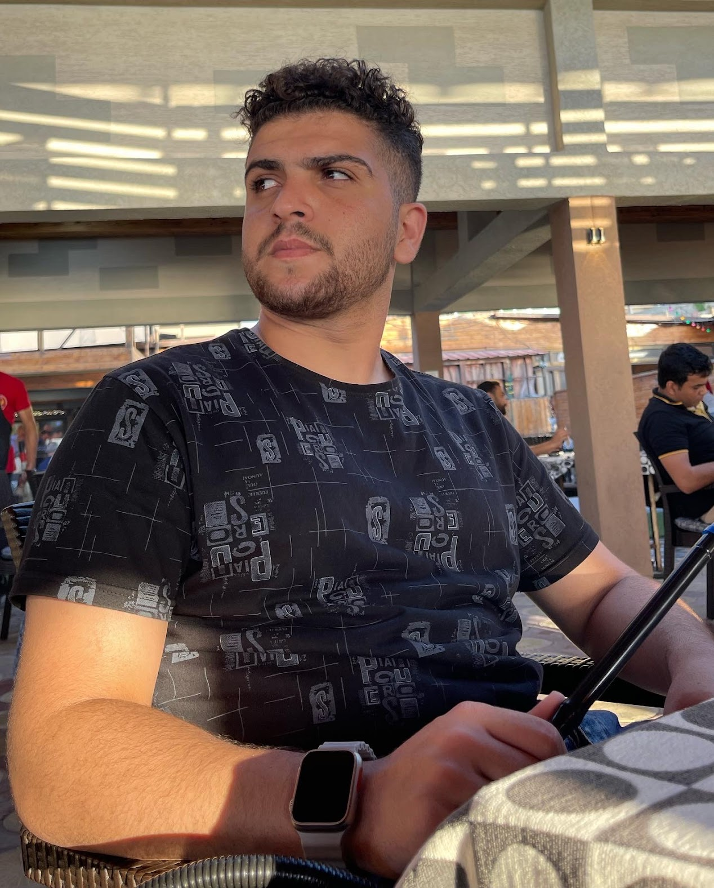

Fares Odini
Web Developer

Summary
A Palestinian student in Turkey, studying software engineering with a passion for coding and problem-solving, seeking to contribute to innovative projects.
Education
- High School Al Manfalouti Sec. Boys School 'A
- Currently a college student
Work Experience
- Apps developer
- Teaching Programming
- A web developer
- Developed and maintained client websites
- Collaborated with design and marketing teams
- Optimized website performance
Skills
- HTML, CSS, JavaScript
- Responsive Web Design
- Version Control (Git)
Achievements
Hobbies
- Hiking
- Photography
- Reading
Contact Details
Phone: +90(505)8273803
Emmil: 20222022598@std.nisantasi.edu.tr